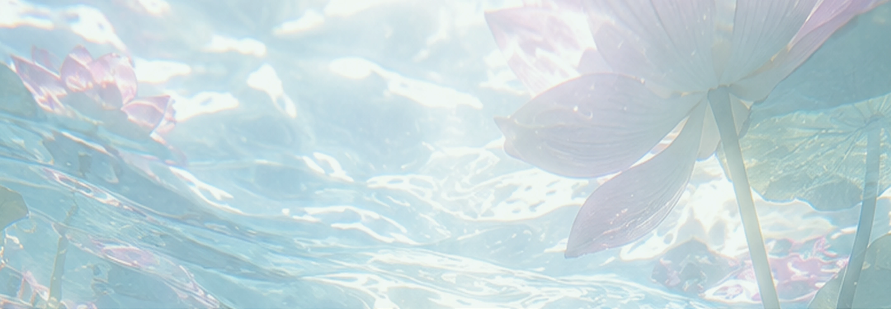
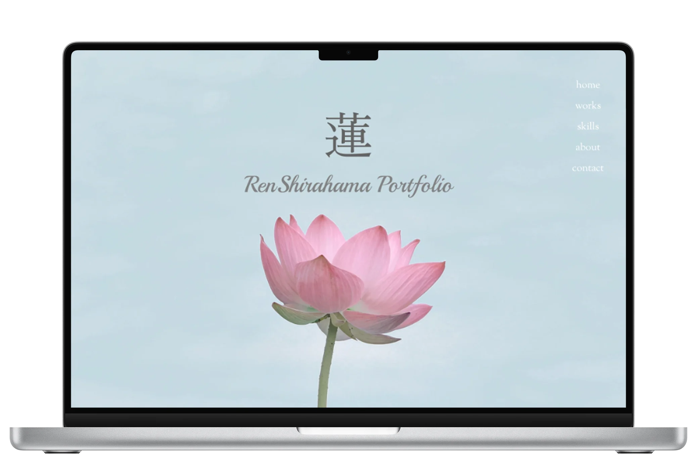
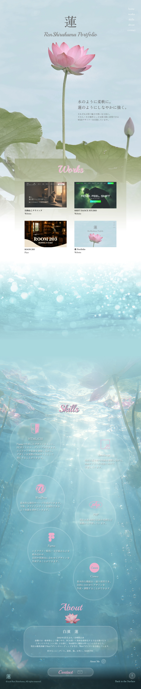

蓮 Portfolio

制作期間
ワイヤーフレーム：1日
デザイン：7日
コーディング：8日
使用ツール

Figma

HTML/CSS
概要
Webデザイナーを目指す自身のポートフォリオサイトです。
これまでに制作したWebサイトやグラフィック作品、スキルをまとめています。
制作実績やスキルだけでなく、どのような考え方でデザインに取り組んでいるのか、自分の強みや人柄まで伝えられるサイトを目指して制作しました。
ターゲット
Webデザイナーの採用を行う企業の採用担当者の方。
目的
制作実績やスキル、自分の強みや人柄をわかりやすく伝え、短時間でも自分のことを知ってもらえるサイトを目指しました。
コンセプト
「水のように柔軟に。蓮のようにしなやかに強く。」
自身の名前である「蓮」から蓮の花をモチーフに自分らしさを表現しました。
水のように、クライアントや目的に合わせて柔軟に形を変えられる一方で、蓮のように自分の軸を持ち、環境や困難に左右されず、地道に成長していくデザイナーでありたいという想いを込めています。
デザイン
まっすぐ咲く蓮の花を起点に、水中へと進んでいくようなデザインにしました。
ページを進むにつれて水中へ深く潜っていく構成にすることで、作品やスキル、自分自身のことを少しずつ深く知ってもらえるようにしています。
一方、Aboutページでは水中から水面へと向かう逆の流れを取り入れ、自分の内面や強みを知ってもらうとともに、学びや経験を重ねながら成長していく姿を表現しました。
最後に水面に咲く蓮の花へと繋げることで、これから目指すWebデザイナーとして成長した自分自身を象徴しています。
泡などの装飾も水中の世界観に馴染むモチーフとして取り入れ、楽しみながら見てもらえるよう工夫しました。
また、各要素の配置や情報量を意識し、視線が自然に流れる構成にすることで、限られた時間で見る採用担当者の方にも要点が伝わり、できるだけ途中で離脱せず、最後まで見ていただけるように意識しています。
Skillsでは権利関係に配慮し、公式のツールロゴをそのまま使用せず、全てサイトの雰囲気に合わせて自作しました。
※ 本作品の画像は、以下のサービスで入手・生成した素材を使用しています。
生成AI: ChatGPT
ストックフォト:Unsplash
